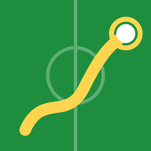
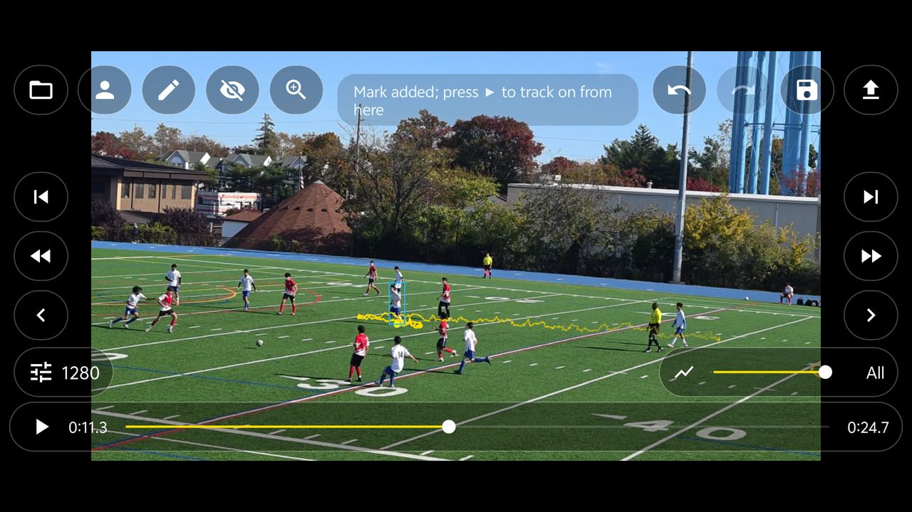
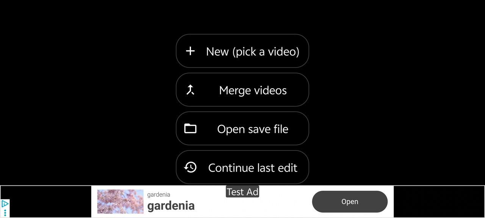
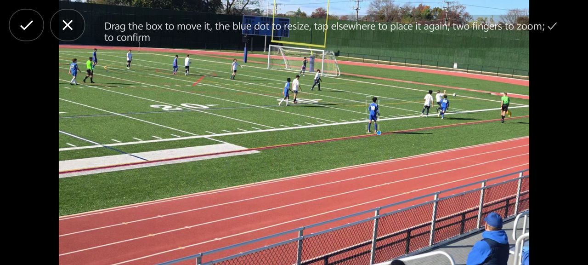
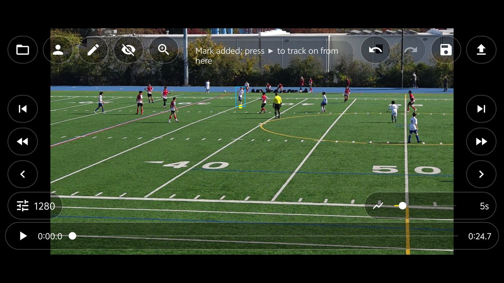
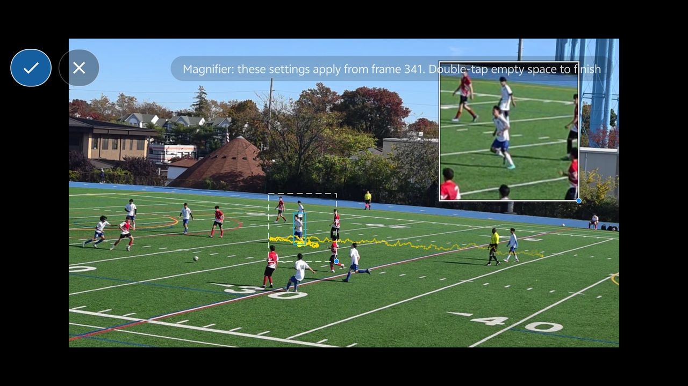
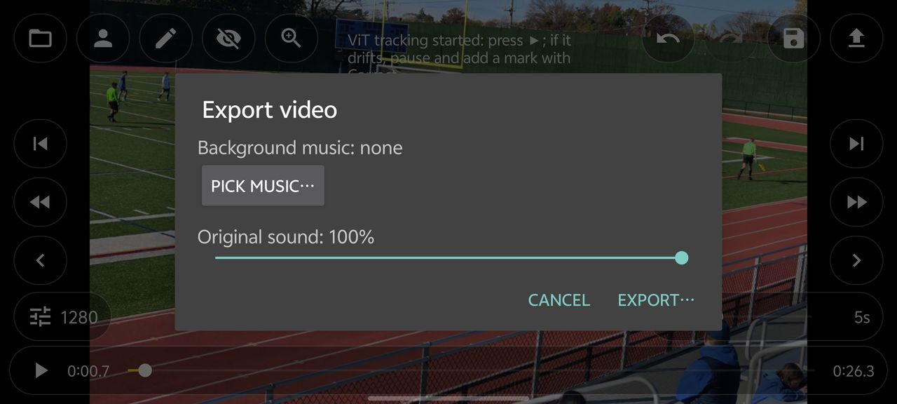
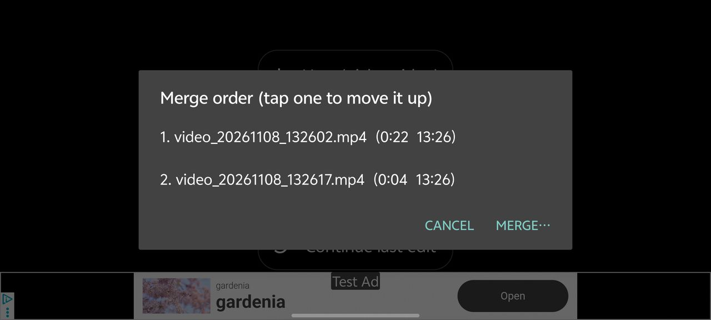

Soccer Trail球员轨迹Tap a player in a match video, follow every run, and export the clip with their running trail drawn on it — ready to share with coaches, teammates and parents. 在比赛或训练视频里点一下球员，App 会一帧一帧地跟住他，把跑动轨迹画在画面上，再导出成视频，方便发给教练、队友和家长。

Everything runs on your phone. Pick a video, pick a player, and Soccer Trail does the tracking. 所有处理都在手机上完成。选视频、选球员，剩下的跟踪交给 App。
Tap near the player's feet; a person detector draws the box around them for you.点球员脚下，人体识别会自动框住他，不用自己画框。
Follows the player frame by frame, even while the camera pans, and looks for them again if they get lost in a crowd.逐帧跟住球员，镜头移动也不怕；在人堆里跟丢了会自动再找回来。
A fading trail behind the player, from a short tail to the whole run.球员身后画出渐隐的轨迹，长度从几秒到整段都可以调。
A picture-in-picture close-up that follows the player; turn it on and off at any moment.画中画放大显示球员，跟着他走；可以在任意时间打开或关闭。
Join several clips — say both halves of a match — into one video, in the order they were filmed.把几段视频（比如上下半场）按拍摄顺序合成一个，再一起跟踪。
Full-resolution export with the trail; add background music and turn the original sound down or off.按原分辨率导出带轨迹的视频；可以加背景音乐，原声可调小或去掉。
Soccer Trail is in early access on Google Play. It's free — join the testers' group, then install it from Google Play like any other app. Feedback and suggestions are very welcome! 球员轨迹目前是 Google Play 上的尝鲜版，免费。先加入测试群组，再像普通应用一样从 Google Play 安装。欢迎试用，多提建议！
Sign in with the same Google account you use for Google Play on your phone, open the group and click Join group. 请用手机上 Google Play 登录的同一个 Google 账号打开群组，点 加入群组 / Join group。
groups.google.com/g/soccer-trail-testersWith the same account, open the test page and tap Become a tester. 还是用这个账号，打开测试页面，点 成为测试者 / Become a tester。
Open the test page打开测试页面On the same page tap download it on Google Play, or search Google Play for Soccer Trail on your phone, then tap Install. The listing shows “Early Access”. 在同一页点 download it on Google Play，或者在手机的 Google Play 里搜 Soccer Trail，点 安装 / Install。商店页上会标着 “Early Access（抢先体验）”。
Soccer Trail on Google Play在 Google Play 打开Updates arrive through Google Play automatically. To send feedback, use Send private feedback on the app's Google Play page, or email jerron@gmail.com. 以后的更新会通过 Google Play 自动推送。有建议可以在应用的 Google Play 页面里点 向开发者发送私密反馈，或者发邮件到 jerron@gmail.com。
Tap the video to show or hide the buttons. Long-press any button to see its name. Pinch to zoom, drag to move around when zoomed. 点一下画面可以显示或隐藏按钮；长按按钮会显示它的名字。双指缩放画面，放大后可以拖动。






No. Tracking and export run entirely on your phone. The app only reads the videos and music you pick yourself.不会。跟踪和导出都在手机上完成，App 只读取你自己选的视频和音乐。
Tap the 1280 button at the bottom left to track at a lower resolution (960 or 640). Export always keeps the original resolution.点左下角的 1280，换成更低的跟踪分辨率（960 或 640）。导出始终是原分辨率。
Landscape video filmed from the side of the field, steady or slowly panning. Players that are very small or hidden for a long time may need a few corrections.从场边横着拍、画面稳定或缓慢移动的视频。球员太小、或者长时间被挡住时，可能需要多修正几次。
A banner on the start screen and an occasional ad after an export. There are no ads while you edit.首页有横幅广告，导出后偶尔会有一次广告；编辑时没有广告。
Not yet — Android only for now.暂时没有，目前只有安卓版。